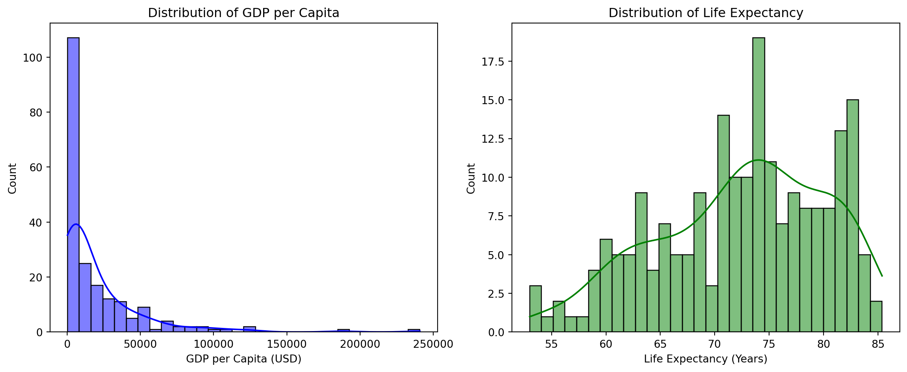

2025-02-26
Dataset: World Development Indicators dataset published by the World Bank (Bank 2022), focusing on one year (2022)
Focus: GDP per capita, life expectancy, and total population (2022)
Steps:
After reviewing the dataset, we decided to choose four indicators for further exploratory data analysis: country, gdp_per_capita, life_expectancy, and total_population.
After handling missing values, we review the dataset and its key statistics.Table Table 1 is a summary of key statistics for the cleaned dataset:
| count | mean | std | min | 25% | 50% | 75% | max | |
|---|---|---|---|---|---|---|---|---|
| gdp_per_capita | 217.00 | 19522.60 | 30439.85 | 259.03 | 3012.22 | 7587.59 | 21508.40 | 240862.18 |
| life_expectancy | 217.00 | 72.42 | 7.57 | 53.00 | 67.26 | 73.39 | 78.16 | 85.38 |
| total_population | 217.00 | 36536447.72 | 141058261.99 | 11312.00 | 808726.00 | 6465097.00 | 26069416.00 | 1417173173.00 |
Now that we’ve handled missing values and examined distributions, let’s explore key relationships between indicators using different visualizations.
To better understand the key indicators, we use:
A Bar Chart (Top 10 countries by GDP per Capita).
A Scatter Plot (GDP per Capita vs. Life Expectancy).
In this presentation, we analyzed the World Development Indicators dataset, focusing on GDP per capita, life expectancy, and total population.
A Bar Chart displaying the Top 10 countries by GDP per Capita to identify the wealthiest nations (see Figure Figure 2).
A Scatter Plot exploring the relationship between GDP per Capita and Life Expectancy, assessing economic prosperity’s impact on public health (see Figure Figure 3). This relationship has been extensively studied, with findings suggesting that higher GDP per capita is often associated with increased life expectancy (Crespo Cuaresma, Lutz, and Sanderson 2019).
Table Table 1 provides key summary statistics for GDP per Capita, Life Expectancy, and Total Population across 217 countries.